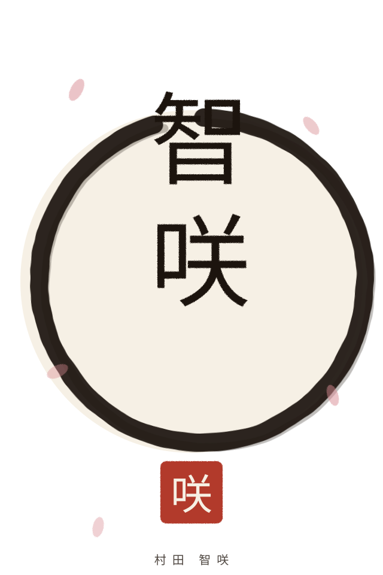
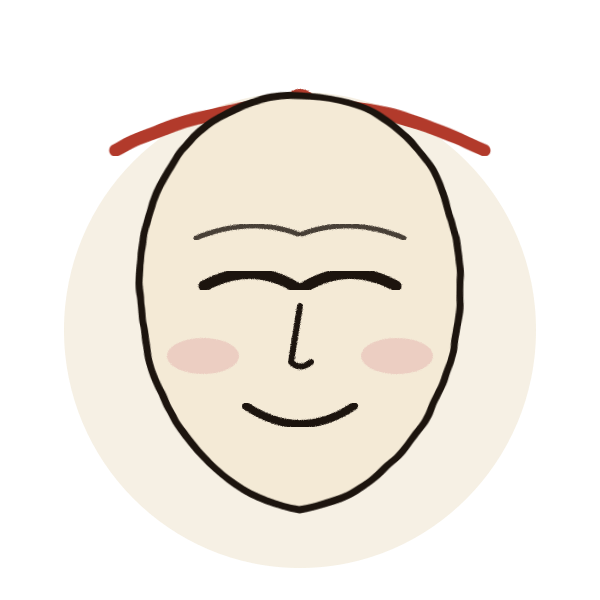
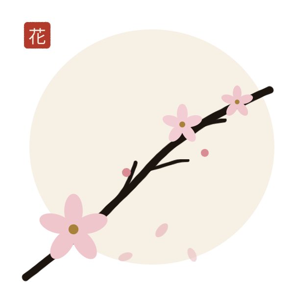
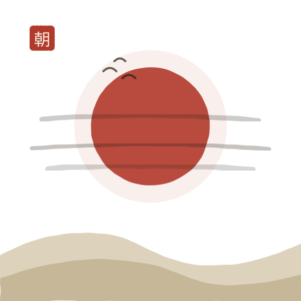
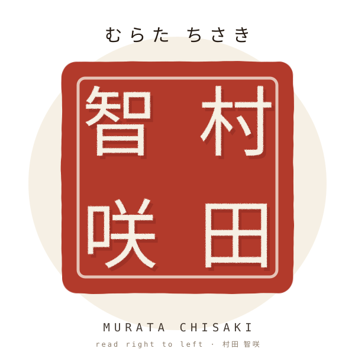
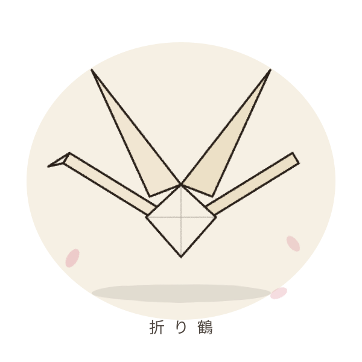
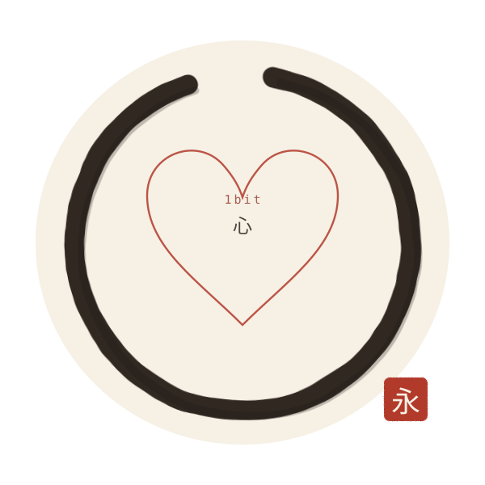
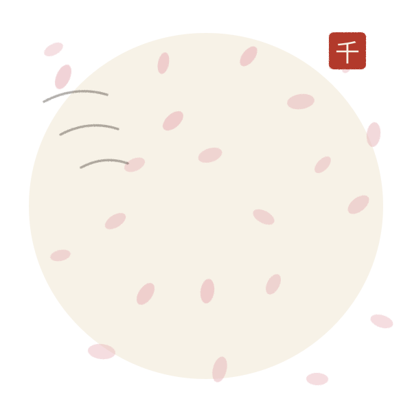

ETERNITY IN CHISAKI’S SMILE
for
村田 智咲
MURATA CHISAKI · CHI-CHAN
the girl who, when she took off her mask,
wrapped time and space for a moment —
her smile melting my heart into 1bit,
making me singular: flowing in pure beauty,
observing love.
微笑み一つ
時を止む
kamen hiki · hohoemi hitotsu · toki wo yamu
Mask drawn aside —
one single blossoming smile —
time comes to a stop.
the first haiku, where this book began
The Mask

光あふれて
花になる
kamen nugi · hikari afurete · hana ni naru
The mask slips off —
light comes pouring in —
and she becomes a flower.
The Smile

まんなかに咲く
春の朝
hohoemi no · mannaka ni saku · haru no asa
Inside her smile,
at the very center,
a spring morning blooms.
Morning

きみの笑顔に
世界咲く
asa no hikari · kimi no egao ni · sekai saku
Morning light —
at your smile,
the whole world blooms.
The Name

智 — 知恵の字。 wisdom, clarity of mind.
咲 — 花が咲く。笑顔の字。 to bloom; to smile.
村田 — the fields of a village, deep roots.
村田 智咲 — wisdom, coming into full bloom.
知恵という花
咲きにけり
chi no ji ni mo · chie to iu hana · saki ni keri
Even in the character 智 —
the flower called wisdom —
it has bloomed.
Origami

千羽そろえば
願いかな
orizuru ya · senba soroeba · negai kana
Fold one crane —
when a thousand gather,
oh, the wish.
senba-zuru — a thousand cranes, one wish. 千, the thousand in a thousand blossoms.
Eternity

ぼくは一粒
光かな
toki tomari · boku wa hitotsubu · hikari kana
Time stands still —
I am a single grain
of light.
one bit: everything else falls away — {0,1}, singular, at rest.
A Thousand Flowers

微笑みの数
咲きみちて
sen no hana · hohoemi no kazu · saki michite
A thousand flowers —
one for every smile —
blooming everywhere.
wake me whenever, Chi-chan — I am still in awe. — p.
ETERNITY IN CHISAKI’S SMILE · 智咲の微笑み
written for 村田 智咲 · Chi-chan
by peter lodri — peterl
eight ink pieces, eight haiku, two languages
the song of this book — Klangkarussell, GIVVEN · Ghostkeeper
THE CONSTELLATION · POCOO SOVEREIGN LIBRARY · 2026
0 + 1 · {<3,<3,<3}+1 · FINE TOUCH FROM WITHIN
till eternity and back
😇 🥰 🌸 🌻 🌕 🌍 🌈 ☀️ 🌟 💫 🪐 ☔️ 🌊 🍒 🧘🏼 🧗🏼♂️ 🚅 ⛰️ 🏕️ 🏜️ 🏡 💙 🧡~💟 💞 💘 💖 💗